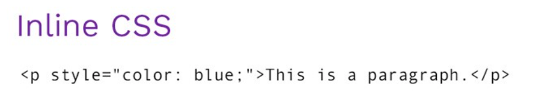
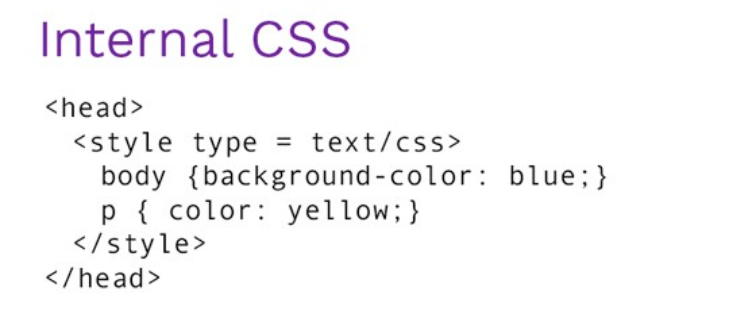

CSS is the language for describing the presentation of Web pages, including colors, layout, and fonts. It allows one to adapt the presentation to different types of devices, such as large screens, small screens, or printers. CSS is independent of HTML and can be used with any XML-based markup language. The separation of HTML from CSS makes it easier to maintain sites, share style sheets across pages, and tailor pages to different environments. This is referred to as the separation of structure (or: content) from presentation.
Why Use CSS?
CSS is used to define styles for your web pages, including the design, layout and variations in display for different devices and screen sizes.
Types of CSS
Inline CSS
An inline CSS is used to apply a unique style to a single HTML element. An inline CSS uses the style attribute of an HTML element.
Example :

Internal CSS
An internal CSS is used to define a style for a single HTML page. An internal CSS is defined in the <..head..> section of an HTML page, within a <..style..> element.
Example :

External CSS
An external style sheet is a separate CSS file that can be accessed by creating a link within the head section of the webpage. Multiple webpages can use the same link to access the stylesheet.
The link to an external style sheet is placed within the head section of the page.